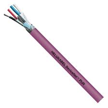
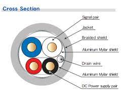

|
NMEA2000 Library
0.1
Library to handle NMEA 2000 Communication written in C++
|
|
NMEA2000 Library
0.1
Library to handle NMEA 2000 Communication written in C++
|
Setting up a basic Hardware environment.
This manual is meant for beginners who starts to build their own devices. There is general information, links and hints about building NMEA2000 network on NMEA2000 bus.
Since I published NMEA2000 library I had several times guided beginners with hardware problems. In this manual I try to give collected information for recommended and required hardware for making NMEA2000 devices and how to connect them to NMEA2000 bus.
I personally prefer to use Teensy 3.2, 3.5, 3.6, 4.0, 4.1 or ESP32 board. Those boards have internal CAN controller and require only either unisolated MCP2562 or isolated ISO1050 transceiver for NMEA2000 connection. With default settings library requires about 23 kB rom and 3.3 kB RAM in normal operation. So you should have at least 8 kB RAM in your processor. If you have Arduino Mega board, it is OK for testing and for small projects, but I do not prefer to buy one for new project. Arduino Due is better, but it is physically bigger and eats more power than Teensies or ESP32. If you have Arduino Uno or any board with less than 8 kB RAM, please read all library issues and Memory requirements on library ReadMe and then forget it. If you anyway want to use it and you have trouble to get it working, please do not set any issues.
Some boards (or processors) have internal CAN controller. In board there will be simply CAN Tx/CAN Rx pins, which often works with 3.3 V levels. Good examples of this kind of boards are recommended Teensy 3.2, 3.5, 3.6, 4.0, 4.1 or ESP32 boards. Arduino DUE has also internal CAN controller. Never connect CAN Tx/CAN Rx pins directly to NMEA2000 bus. If you use board without internal CAN controller or you want to have second CAN controller e.g., for Teensy 3.2 or ESP32, you can use external one. Currently only supported is MCP2515. When you search “CAN bus shield” to buy, you have to take care of:
It is relatively easy to solder “CAN bus shield” by self. There is schematics in document ArduinoMega CAN with MCP2515 MCP2551.pdf. If you need to use that with 3.3 V processor, you can replace MCP2551 to MCP2562.
CAN controller takes care of CAN (or NMEA2000) bus communication. To connect it to the bus, you need some CAN transceiver. The transceiver has two tasks. Receiving: it converts the data stream from CAN bus levels to levels that the CAN controller uses. It usually has protective circuitry to protect the CAN controller. Transmitting: it converts the data stream from the CAN controller to CAN bus levels.
I recommend either unisolated MCP2562 or isolated ISO1050 transceiver. MCP2562 operates with 5 V and it has own pin to define Tx/Rx logic levels for 3.3 V devices. ISO1050 has own power pin for both sides so it also works with any logic levels. There is lot of issues with SN65HVD230 transceiver. If you use that, please do not open issue – it is not library problem.
I do not know why there has been so much problems with SN65HVD230 - according datasheet it should be fine. I have had problems with MCP2562 only twice. Once I mixed Vdd and Vcc - worked fine after connected them right. Another time I connected STBY pin to Vdd, which puts chip to stand by.
Unisolated tranceiver (like MCP2562) means that it will share the ground with NMEA2000 bus and with your board. You can use unisolated transceiver, if you power your device from NMEA2000 bus and it does not connect to ground from another path like through sensor.
In any case devices with unisolated tranceiver must be powered from NMEA2000 bus and they can not be connected to unisolated sensors. If you program unisolated device through USB connector with laptop, you are in safe when laptop is powered only by batteries. USB will connect your laptop ground to NMEA2000 bus ground, but since laptop is only battery powered, it is “floating” system. If you connect charger to your laptop same time, then it depends of charger do you have ground loop or not. Since this is just temporary connection, it should be OK.
The MCP2561/2 is a high-speed CAN, fault-tolerant device that serves as the interface between a CAN protocol controller and the physical bus. The MCP2561/2 device provides differential transmit and receive capability for the CAN protocol controller, and is fully compatible with the ISO-11898-2 and ISO-11898-5 standards. It will operate at speeds of up to 1 Mb/s.
Typically, each node in a CAN system must have a device to convert the digital signals generated by a CAN controller to signals suitable for transmission over the bus cabling (differential output). It also provides a buffer between the CAN controller and the high-voltage spikes that can be generated on the CAN bus by outside sources (EMI, ESD, electrical transients, etc.).
Isolated tranceiver has either optical or galvanic (ISO1050) isolation. Those has to be powered from both sides with isolated power, so you need also at least two power supplies. You must take care that both sides will also have always separate grounds and they do not touch in any way. Isolated device is safest solution in all cases.
The ISO1050 is a galvanically isolated CAN transceiver that meets the specifications of the ISO11898-2 standard. The device has the logic input and output buffers separated by a silicon oxide (SiO2) insulation barrier that provides galvanic isolation of up to 5000 VRMS for ISO1050DW and 2500 VRMS for ISO1050DUB. Used in conjunction with isolated power supplies, the device prevents noise currents on a data bus or other circuits from entering the local ground and interfering with or damaging sensitive circuitry. As a CAN transceiver, the device provides differential transmit capability to the bus and differential receive capability to a CAN controller at signaling rates up to 1 megabit per second (Mbps). The device is designed for operation in especially harsh environments, and it features cross-wire, overvoltage and loss of ground protection from –27 V to 40 V and overtemperature shutdown, as well as –12-V to 12-V common-mode range. The ISO1050 is characterized for operation over the ambient temperature range of –55°C to 105°C.

Note that development boards have been designed to be powered from USB. If you power your board from NMEA2000, you need to check how you can isolate USB power. All Teensy boards has “5V pad”, which you can cut. E.g., Teensy 3.2


I used this simple schematic at the beginning with 1-wire or other onboard or isolated sensors.

With isolated tranceiver you are safe to connect different sensors. You can e.g., measure engine temperature from engine by using resistor divider.
Simple samples above did not have any protection to the bus. Unfortunately, power supplies etc. may cause your device to emit noise to the bus – or opposite. To have better protection, you can use something like this.
If your device does not require much power and you want to feed it totally from NMEA2000 bus, you can use something like this.
Here Net-S is 12 V and GND-ISO is Gnd from NMEA2000 bus. You then feed your device from +5V/GND. Note that with this connection you do not have isolated 12 V for sensors. If you need that you have to use build your device with separated power supply as in chapter Teensy 3.2, simple isolated.
When your device hardware is ready and you have some other device to test it with, you can make simple test bench at home. Simply connect your device NMEA2000 CAN-H/CAN-L with another device. Note that if you use e.g., MFD as other device, that needs to be powered on NMEA2000 connector and also with external connector, if it has one. This is because MFD NMEA2000 tranceiver is isolated and powered from NMEA2000 bus. If you do not have MFD, but have several own devices use example DataDisplay2 on one device to listen bus. Add 120 ohm termination resistor to both end of your test bus. The most common problem has been missing or wrong termination resistors!

Upload e.g., example TemperatureMonitor to your device and run it. It has been tested with Teensy, ESP32, Arduino DUE, Arduino Mega etc. When you run it, you should see it on your MFD device list or whatever your other device is. If you do not, check at least 10 times your connections, termination resistors, powering. Power off your system and measure that there is 60 ohm resistance between CAN-H and CAN-L. If everything is fine and you use some “CAN bus shield” with MCP2515, check the configuration on software for it is right. Library defaults 16 MHz clock and SPI CS pin 53. In 100% of cases problem has been in hardware or software configuration. When you have got it working, you can start to develop your own software.
If you test your device with e.g., example TemperatureMonitor, it should work. If it start to print “Sent failed” after a while, you will most probably have some hardware failure. “Sent failed” means that your device CAN controller can not send data to the bus. “Sent failed” message will come with delay, when send buffer has been filled up so it depends of your buffer size how long it will take.
NMEA_2000 bus is electrically CAN bus. NMEA2000 protocol is based on SAE_J1939, with specific messages for the marine environment. The one important thing differing from CAN is that bus speed is fixed to 250kb. On CAN bus it can be up to 1 Mb or even variable. If you are interested, dig more information from internet. NMEA2000 bus is like ethernet so that you can have multiple devices on same bus, they all can send information to the bus and there is no bus master device. The biggest difference to traditional NMEA0183 connection is that only one device can send data.
In NMEA2000 bus there is one main bus called backbone or trunk. Devices to bus will be connected with drop cables. There are lot of good documents available. Look e.g. Proper NMEA 2000 Installation by NMEA organization, Complete guide to building an NMEA2000 network by Actisense, Network Installation guide by Maretron.
Important things are:
If you need just one or two cable, it may be easiest to buy it from marine dealer, but if you start to build whole NMEA2000 network, you may save a lot by using industry standard parts. NMEA2000 bus uses same cabling as DeviceNet, which is used in industry. So you can build your NMEA2000 network with DeviceNet cables and connectors.
The most common connector used in NMEA2000 is M12 5-pin Micro-C connector.

| 
|

| 
|
By searching from internet with ”M12 5-pin Micro-C connector” you will find lot of alternatives cheaper that from local marine dealer. In pictures above are connectors with screw terminals and easy to install. To get smaller sizes you can use connectors with solder terminals.
You can search also “DeviceNet connector” and you will find commonly used connector:
With above model it is easy to make e.g., hub-box instead of using expensive Micro-C hubs.
In fixed cabling I have used DeviceNet PUR L45467-F16-W8 (1 x 2 x 0,67 mm2 + 1 x 2 x 0,38 mm2). I have used this because it happens to be my cable dealer type. Just google “DeviceNet cable” to find alternatives. You can use other types of cables, but to make life easier using NMEA2000 or DeviceNet cable you have right pairing, proper shielding and colours: + = red, - = Gnd, CAN-H = white, CAN-L = blue, and shield.

|

|
If you had problem on old NMEA0183 connection, only one device went off. With NMEA2000 there is risk that one failing device will lock the whole bus and all your devices will be then off. Simple preparing may safe you from full disaster.
In case you have problems on the bus and it is not clear, simply take drawings and: